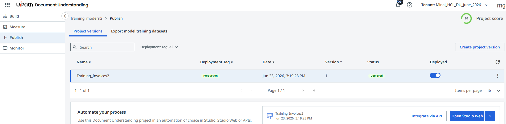

Practical Exercise : Extracting Data from Invoices
🎯 What You Will Do
- Follow along with the step-by-step walkthrough video for end-to-end invoice extraction
- Set up a Modern Document Understanding project for semi-structured invoices
- Annotate, train, publish, and consume the model in a Studio workflow
Walkthrough Video
Watch the full practical walkthrough below. Follow along in your own UiPath environment to build the invoice extraction project step by step.
UiPath Document Understanding (Modern Projects) — Step-by-Step
1
Setup
Create a New Document Understanding Project
- Open UiPath Document Understanding service in Automation Cloud.
- Select Create Project.

- Give the project the name
Training_Modernand click Save. - Add the document type — choose Invoices and click Add.
2
Configuration
Configure Extraction Fields
- Click the ⋮ (3 dots) menu and select Document Type Manager.

- Click on the Extraction Fields tab. Keep these fields and remove all others.

- Add a new extraction field named
ShipToPartyPhoneNumberof type String.
3
Data
Upload Sample Documents
- Navigate to the Build section.
- Upload your sample invoice documents.
- Wait for the documents to be processed.
- Verify all uploaded files appear and are ready for annotation.
4
Annotation
Annotate Documents
- Open a sample invoice.
- Select a field from the Extraction Fields panel on the right.
- Highlight the corresponding value on the document.
- Annotate these fields across all documents:
ShipToPartyPhoneNumberVendor NameInvoice NumberTotal Amount
- Annotate table columns for line-item extraction if applicable.
5
Review
Validate Annotations
- Review all highlighted fields across documents.
- Ensure each field is mapped to the correct region.
- Check confidence scores and extraction quality.
- Save the annotations.
6
Evaluation
Check the Measure Section
- Navigate to the Measure tab and open Metrics.
- Ensure you have a satisfactory accuracy percentage for each field.
💡 Tip
For high-stakes workflows aim for 90%+ F1. With human-in-the-loop validation in place, 75–80% is acceptable.
7
Publishing
Publish the Extraction Model
- Navigate to the Publish tab.
- Click Create Project Version, choose document type Invoices, give it a name, and click Create.
- Toggle the Deployed button to make the model live.
8
Automation
Create a Studio Automation
- Click on "Open Studio Web".

- This will open the automation in Studio Web in another tab.
- Run the Studio Web workflow and test it.
- Observe the execution logs.
- Verify extraction results.
- Confirm that invoice data is extracted successfully.